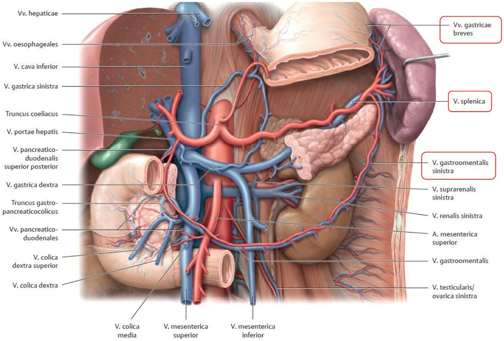
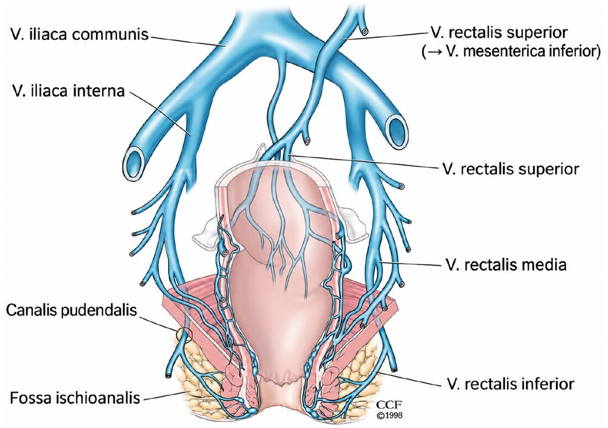

Bölüm 6 · Vena portae hepatis
Portal sistemden gelen sorular iki tiptir: bir venin v. portae'ye açılıp açılmadığı ve portal ile sistemik venlerin hangi bölgede birleştiği. İkinci tip özellikle umbilikal bölge üzerinden sorulur, çünkü bu bölgede hem portokaval hem kavokaval bağlantılar vardır. Bu bölüm portal dolaşımın mantığını, v. portae'nin köklerini ve kollarını, ardından dört anastomoz bölgesini ve portal hipertansiyondaki karşılıklarını anlatır.
Portal sistemde kan iki kapiller yataktan art arda geçer. Birinci yatak sindirim organları ve dalaktaki kapillerlerdir. Buradan toplanan kan v. portae hepatis ve dallarıyla karaciğere taşınır. İkinci yatak karaciğerin sinüzoidleridir (sinusoidea hepatis). Burada portal kan a. hepatica propria'dan gelen arteriyel kanla karışır. Sinüzoidlerdeki akım lobulusun çevresinden merkezdeki v. centralis'e doğrudur. Vv. centrales birleşerek vv. hepaticae'yi oluşturur ve kan v. cava inferior'a döner. Bu düzen sayesinde bağırsaktan emilen maddelerin çoğu sistemik dolaşıma girmeden önce karaciğerde işlenir.
Drenaj alanı. Portal sistem özofagusun distal bölümünden, mideden, ince ve kalın bağırsaktan, dalaktan, pankreastan ve safra kesesinden kan toplar. Canalis analis'in linea pectinata altındaki bölümü başlıca sistemik venlere drene olur. Bu sınır portokaval anastomozun yerini belirler.
V. portae hepatis yaklaşık 8 cm uzunluğundadır. Erişkinde işlevsel kapakçığı yoktur. Normal akım karaciğere doğrudur (hepatopetal). Collum pancreatis'in arkasında, genellikle L1-L2 düzeyinde, v. mesenterica superior ile v. splenica'nın birleşmesiyle oluşur. Arkasında v. cava inferior bulunur. Pars superior duodeni'nin arkasından geçer, lig. hepatoduodenale içinde yukarı ve sağa yükselir ve porta hepatis yakınında ramus dexter ile ramus sinister'e ayrılır. Ramus dexter karaciğerin sağ sektörlerine (Couinaud segment V-VIII), ramus sinister sol segmentlere (II-IV) gider. Lobus caudatus (segment I) iki daldan da kan alabilir.
V. mesenterica inferior v. portae'nin zorunlu üçüncü kökü değildir. Çoğunlukla v. splenica'ya, bazen v. mesenterica superior'a ya da iki venin birleşme yerine açılır. 2025-2026 uygulama sınavında v. mesenterica inferior gösterildi. V. portae ile vv. hepaticae de karıştırılır. V. portae kanı karaciğere getirir ve lig. hepatoduodenale içindedir. Vv. hepaticae (dextra, media, sinistra) kanı karaciğerden uzaklaştırır, lig. hepatoduodenale'de bulunmaz ve doğrudan VCİ'ye açılır.
Lig. hepatoduodenale omentum minus'un kalınlaşmış serbest sağ kenarıdır ve porta hepatis ile pars superior duodeni arasında uzanır. İçinde üç yapı bulunur: arkada v. portae hepatis, önde sağda ductus choledochus, önde solda a. hepatica propria. Lenf damarları, lenf düğümleri ve otonom sinir lifleri de bu bağın içindedir. Bağ foramen omentale'nin (Winslow deliği) ön sınırıdır. Deliğin arkasında VCİ'yi örten periton, üstünde lobus caudatus, altında pars superior duodeni bulunur. Pringle manevrasında bu bağ parmaklar arasında sıkıştırılır ve karaciğere gelen portal ve arteriyel akım durur. Manevra vv. hepaticae ya da VCİ kaynaklı kanamayı kontrol etmez, çünkü bu damarlar bağın dışındadır.
| Ven | Drenaj alanı ve kolları | Nereye açılır? |
|---|---|---|
| V. mesenterica superior | Jejunum, ileum, çekum, apendiks, kolon ascendens, kolon transversum'un proksimal 2/3'ü. Kolları: vv. jejunales ve ileales, v. ileocolica, v. colica dextra, v. colica media, v. gastroomentalis dextra, vv. pancreaticoduodenales. Mezenterde a. mesenterica superior'un sağında yükselir. | Collum pancreatis arkasında v. splenica ile birleşir → v. portae |
| V. splenica | Dalak, corpus ve cauda pancreatis, midenin bir kısmı. Kolları: vv. gastricae breves (fundus, lig. gastrosplenicum içinde), v. gastroomentalis sinistra, vv. pancreaticae, sıklıkla v. mesenterica inferior. Pankreasın arka yüzü boyunca sağa gider. | V. mesenterica superior ile birleşir → v. portae |
| V. mesenterica inferior | Kolon descendens (v. colica sinistra), kolon sigmoideum (vv. sigmoideae), rektum (v. rectalis superior, IMV'nin aşağıdaki devamıdır). Sol iliak damarların önünden retroperitoneal yükselir. | Genellikle v. splenica'ya |
| Doğrudan v. portae'ye açılanlar: v. gastrica sinistra ve v. gastrica dextra (küçük kurvatur), v. pancreaticoduodenalis superior posterior, vv. cysticae (ramus dexter'e ya da doğrudan karaciğer dokusuna), vv. paraumbilicales (ramus sinister'e, lig. teres hepatis boyunca) | V. portae ya da dalları | |

"V. portae'ye dökülmeyen" sorusunda iki tuzak vardır. Birincisi, sindirim organına ait olduğu hâlde v. portae'ye doğrudan değil bir kökü üzerinden açılan venlerdir: vv. pancreaticae v. splenica'ya açılır (2023-2024 S16). İkincisi, adı sindirim kanalını çağrıştırdığı hâlde sistemik sisteme ait venlerdir. Vv. rectales mediae v. iliaca interna'ya, vv. rectales inferiores v. pudenda interna üzerinden v. iliaca interna'ya, vv. hepaticae ve vv. lumbales VCİ'ye açılır. Rektumun venlerinden yalnızca v. rectalis superior portal sisteme aittir (2024-2025).
Embriyolojik temel ve fetal artıklar. V. portae duodenum çevresinde ağ oluşturan vv. vitellinae'den gelişir. Bu yüzden duodenum ve pankreasla komşudur. Fetal sol v. umbilicalis doğumdan sonra lig. teres hepatis'e, karaciğeri atlatan ductus venosus ise lig. venosum'a dönüşür (Kitap 1, Bölüm 6.4). Vv. paraumbilicales'in genişlemesi ductus venosus'un açık kalmasıyla aynı şey değildir.
Portal sistemin venleri bazı bölgelerde sistemik (kaval) venlerle birleşir. Normalde bu bağlantılardan az kan geçer. Karaciğerde direnç arttığında (portal hipertansiyon) portal kan bu yollara yönelir, venler genişler ve varis oluşur.
| Bölge | Portal taraf | Sistemik taraf | Klinik karşılık |
|---|---|---|---|
| Özofagusun distal bölümü | V. gastrica sinistra'nın özofageal kolları | Vv. oesophageae → v. azygos / v. hemiazygos → VCS | Özofagus varisleri, rüptüründe ağır üst GİS kanaması (hematemez) |
| Rektum ve canalis analis | V. rectalis superior → IMV | Vv. rectales mediae ve inferiores → v. iliaca interna → VCİ | Rektum varisleri |
| Umbilikus çevresi | Vv. paraumbilicales (lig. teres hepatis boyunca, ramus sinister'e) | Karın duvarının yüzeyel ve derin venleri | Caput medusae |
| Retroperitoneum (Retzius venleri) | Vv. colicae ve diğer visseral venlerin küçük kolları | Vv. lumbales, vv. renales | Cerrahi diseksiyonda kanama |
| Area nuda hepatis | Küçük portal kollar | Vv. phrenicae inferiores, retroperitoneal venler | — |
Umbilikal bölge neden ayrıdır? Göbek çevresinde vv. paraumbilicales karın duvarı venleriyle birleşir (portokaval bağlantı). Karın duvarının venleri ise iki kava sistemini birbirine bağlar (kavokaval bağlantı): yukarıda v. epigastrica superior v. thoracica interna üzerinden v. brachiocephalica'ya ve VCS'ye, aşağıda v. epigastrica inferior v. iliaca externa'ya, v. epigastrica superficialis v. saphena magna ya da v. femoralis'e ve oradan VCİ'ye açılır. Bu yüzden hem portokaval hem kavokaval anastomozun bulunduğu bölge umbilikal bölgedir (Derleme S60). Caput medusae umbilikusun çevresinde ışınsal uzanan genişlemiş yüzeyel venlerdir. Portal kan vv. paraumbilicales üzerinden karın duvarına geçer ve akım göbekten çevreye doğrudur. VCİ tıkanmasında da karın duvarı venleri genişleyebilir, ama bu durumda akım aşağıdan yukarıya doğrudur.
Rektum varisi ile hemoroidal hastalık eş anlamlı değildir. Rektum varisleri portosistemik kollateral venlerin genişlemesidir ve portal hipertansiyonla ilişkilidir. Hemoroidal hastalık canalis analis'teki vasküler yastıkçıkların hastalığıdır ve portal hipertansiyon gerektirmez. İki durum aynı kişide birlikte bulunabilir.

Portal hipertansiyon tıkanmanın düzeyine göre sınıflanır. Prehepatik nedenler v. portae trombozu ya da dıştan basıdır. İntrahepatik nedenlerin en sık örneği sirozdur (sinüzoidal tip). Posthepatik nedenler vv. hepaticae tıkanıklığı ya da sağ kalp yetmezliğidir. Bölgesel bir tıkanma da olabilir: v. splenica trombozu sol taraflı portal hipertansiyon yapar. Dalağın kanı vv. gastricae breves ve vv. gastroomentales üzerinden dönmeye çalışır ve özellikle fundus gastricus'ta varis gelişir. Siroz bulunması gerekmez. Portal hipertansiyonun bulguları splenomegali, asit ve kollateral venlerin (özofagus ve fundus varisleri, caput medusae) genişlemesidir.
Tedavide kullanılan şantlar. TIPS (transjuguler intrahepatik portosistemik şant) karaciğer içinde v. portae'nin bir dalı ile bir v. hepatica arasına stent yerleştirir. Cerrahi portokaval şant v. portae'yi doğrudan VCİ'ye bağlar. Distal splenorenal şant v. splenica'nın dalak tarafındaki ucunu sol v. renalis'e bağlar. Şantlar portal kanın karaciğeri atlamasına yol açtığı için bağırsak kaynaklı maddeler (örneğin amonyak) karaciğerde işlenmeden beyne ulaşabilir ve hepatik ensefalopati gelişebilir.
Doğru: C. Corpus ve cauda pancreatis'in venleri (vv. pancreaticae) v. splenica'ya açılır. Kan v. portae'ye ancak v. splenica üzerinden ulaşır. Soru doğrudan dökülen venleri ayırt etmeyi ister.
A ve B yanlış: midenin küçük kurvaturundaki iki gastrik ven doğrudan v. portae'ye açılır. D yanlış: vv. paraumbilicales lig. teres hepatis boyunca v. portae'nin ramus sinister'ine ulaşır. E yanlış: v. cystica v. portae'nin ramus dexter'ine ya da doğrudan karaciğer dokusuna açılır.
Not: kayıtta anahtar yoktur. Cevap sunumun drenaj tablosuna göre verilmiştir.
Doğru: B. V. rectalis superior rektumun portal drenaj yoludur. Yukarıda v. mesenterica inferior olarak devam eder ve genellikle v. splenica üzerinden v. portae'ye ulaşır.
A yanlış: vv. hepaticae karaciğerden çıkan venlerdir ve VCİ'ye açılır. C ve E yanlış: rektumun orta ve alt venleri v. iliaca interna sistemine (alt ven v. pudenda interna üzerinden) açılır, yani sistemiktir. D yanlış: vv. lumbales VCİ'ye açılır.
Not: kayıtta kök "Hangisi v. porta hepatis'e dökülen venlerden değildir?" ve şıklar "a." ile yazılmış, anahtar olarak B (rectalis superior) işaretlenmiştir. Bu kökle dört şık doğru olurdu ve işaretlenen şık yanlış olurdu. Anahtarın tek doğru cevap olabilmesi için kökün "dökülen hangisidir" olması gerekir. Bu yüzden kök düzeltilmiştir. Sınavda kökü dikkatle okuyun: "değildir" sorulursa cevap v. rectalis superior dışındaki venlerden biridir.
Doğru: C. Göbek çevresinde vv. paraumbilicales karın duvarı venleriyle birleşir (portokaval). Aynı bölgede v. epigastrica superior (VCS sistemi) ile v. epigastrica inferior ve superficialis (VCİ sistemi) birbirine bağlanır (kavokaval).
A yanlış: özofagusun alt ucunda yalnızca portal (v. gastrica sinistra) ile azygos sistemi arasında bağlantı vardır. B yanlış: rektumda v. rectalis superior (portal) ile rectales mediae ve inferiores (VCİ sistemi) birleşir, ikinci bir kava sistemi katılmaz. D yanlış: retroperitoneal Retzius venleri portal ve VCİ sistemi arasındadır. E yanlış: ductus venosus fetal bir şanttır ve doğumdan sonra lig. venosum olur.
Not: derlemede anahtar yoktur.
Doğru: D. V. portae collum pancreatis'in arkasında, genellikle L1-L2 düzeyinde v. mesenterica superior ile v. splenica'nın birleşmesiyle oluşur.
A ve B yanlış: v. mesenterica inferior zorunlu bir kök değildir. Çoğunlukla v. splenica'ya, bazen v. mesenterica superior'a açılır. C yanlış: v. gastrica sinistra v. portae'ye doğrudan açılan bir koldur. E yanlış: vv. hepaticae karaciğerden çıkar ve VCİ'ye açılır.
Doğru: A. Bağın içinde v. portae arkada, ductus choledochus önde sağda, a. hepatica propria önde solda yer alır.
B ve C yanlış: ikisi de v. portae'nin önündedir. D yanlış: a. gastroduodenalis bağın altında, duodenumun arkasından iner. E yanlış: VCİ bağın içinde değil, foramen omentale'nin arka duvarındadır.
Doğru: E. Özofagusun distal bölümünde v. gastrica sinistra'nın özofageal kolları sistemik vv. oesophageae ile birleşir. Portal basınç arttığında bu bağlantı genişler ve submukozal varisler oluşur.
A, B ve C yanlış: bunlar anastomozun sistemik tarafıdır. Kan vv. oesophageae'den v. azygos ve v. hemiazygos üzerinden VCS'ye ulaşır. D yanlış: v. gastrica dextra küçük kurvaturun pilor tarafındadır, özofagusa ulaşmaz.
Doğru: B. Pringle manevrası lig. hepatoduodenale içindeki v. portae ve a. hepatica propria'yı sıkıştırarak karaciğere kan girişini durdurur. Vv. hepaticae ve VCİ bu bağın dışındadır, bu yüzden onlardan kaynaklanan kanama sürer.
A ve C yanlış: ikisi de bağın içindedir ve manevrayla akımları durur. D ve E yanlış: bunlar bağın içindeki damarların dallarıdır. Ana gövdeleri sıkıştırıldığında dallarına da kan gelmez.
Doğru: A. Linea pectinata'nın altı sistemik venlerle drene olur. V. rectalis inferior canalis pudendalis içinde v. pudenda interna'ya, o da v. iliaca interna'ya açılır.
B yanlış: bu yol rektumun üst kısmının portal drenajıdır. C yanlış: v. rectalis media v. iliaca interna'ya açılır, externa'ya değil. D yanlış: vv. sigmoideae IMV'ye açılır ve kolon sigmoideum'u drene eder. E yanlış: v. femoralis alt ekstremitenin venidir, perineden kan almaz.